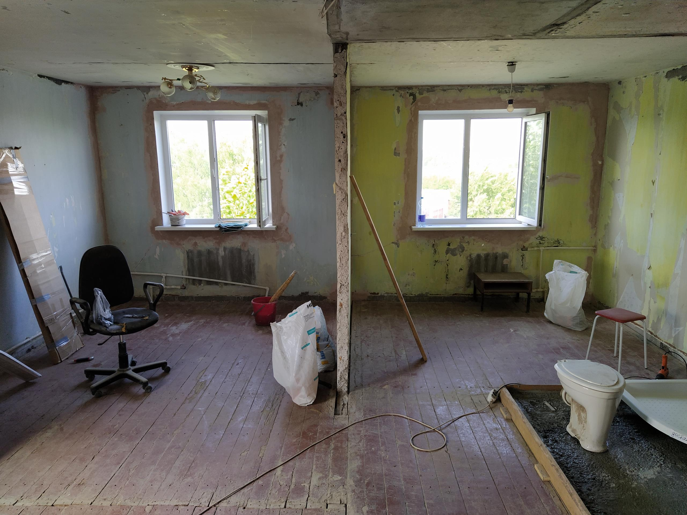

Ремонт года
Расскажу как это было...
Все началось с того, что пришло время делать ремонт. Больше не было причин откладывать его. Тем более скоро у нас должна была появится еще дочь - третья.
Пришлось задумываться - как переделать квартиру так, чтобы места хватило всем. И это при том, что общая площадь квартиры не изменилась...

Прям как в сказке "Жадный Вартан", где богач заказал семь шапок ;-)

Но вместе с женой мы подошли к этой задаче очень творчески, отбросив мыслить стереотипами - и все получилось! Главное все довольны :-)
Итак, что было важно:
- Каждому подростку - по своей комнате
- Большая общая комната в центре квартиры
- Большая душевая кабина!
- Отдельная взрослая спальня - большая
- Мне отдельный кабинет, пусть даже маленький...
Какие были этапы ремонта:
- Обсуждение и черновые наброски планировки квартиры
- Проектиорование
- Подача документов по всем инстанциям для официальной регистрации перепланировки
- Демонтаж почти всех стен внутри квартиры (осталось наверное 20% старых стен)
- Заливка общего бетонного пола в ванной и туалете - сделали совмещение в одну комнату
- Ремонт пола
- Выставление каркаса новых стен
- Проводка новой электрики по всей квартире
- Обшивка каркаса стен гипсокартоном и клейка обоев
- Установка дверей и арки
- Монтаж натяжных потолков
- Монтаж ламината и ленолиума
- Установка сантехники и обогревателей
Между прочим - тем кто хочет сам сделать согласование перепланировки, вот инструкция:
Как согласовать перепланировку: пошаговая инструкция